Agent-first workflows, connections, toolkits and memory
Replaces recipes, the factory pipeline and approvals. Built in 18 PRs across 8 milestones; open any PR card for its deep dive.
Owner: joithor · Date: 2026-11-07 · Builders: Sindri's agent team · Kind: system design, phased
Summary

Sindri becomes a small, local workflow platform that an agent can drive end to end over MCP. A person describes an
automation in one sentence to an agent in Claude Code or Codex ("every morning, check whether the client library in
repo B still matches the API contracts in repo A, and open a PR if it drifted"), the agent builds it through Sindri's
MCP tools, test-runs it with the owner, and turns it on. Nobody has to open the app, though the app shows and edits the
same thing.
Five capabilities, built in order:
No approvals, every verb for agents. Profile approval, recipe approval and the agent-session refusals go away.
Workflows as graphs of generic blocks, built over MCP, run on the existing Temporal engine. Recipes and the factory pipeline are deleted.
Connections: OAuth APIs, MCP servers, REST APIs with a key and CLI tools, signed in once; polling triggers with a catch-up scan; a generic handoff inbox so outside systems can give Sindri work.
Memory stores: named, shared fact stores recalled by meaning, usable by workflows, agents and the owner's sessions.
Toolkits and resources: C# toolkits that add MCP tools, and per-workflow, per-block and per-toolkit databases, disks and sandbox sizes that Sindri provisions locally.
A sixth part, the canvas in the app, comes last.
Why
Today's workflows don't work for everyday automation. Sindri's recipe engine was built for one long pipeline
(intake → scoping → design → build → prove → ship). Its blocks know their station (step.scope.*, step.lens.round,
the line dispatcher), so they can't be reused, and building a small automation ("trigger → start an agent → report")
means writing a new recipe from station-specific blocks plus C# for whatever is missing. The pipeline itself never
became reliable. The owner's decision: drop it.
The work that keeps a team moving is small and repeatable: tech-debt scans, dependency and contract drift checks,
cleanup PRs, triage. Each one is a trigger, an agent with a scoped job, a condition and a notification. With generic
blocks that is four nodes and zero new code.
Building must be agent-first. The owner doesn't want to open an editor to build a workflow. An agent with good
MCP tools and good docs should get from a sentence to a running workflow in minutes.
Approvals cost more than they protect here. Sindri is single-owner and local. Every profile edit, recipe change and
pin waits for sindri profile approve <hash> typed in a human terminal, and agent sessions are refused 89 call sites
of SND-AUTH-002 across 59 files. The owner's decision: trust the editor. The agents are good enough to test changes
with the owner first.
Goals
G1. An agent builds, test-runs, activates, edits, pauses and debugs a workflow entirely over MCP.
G2. One generic block catalog covers trigger → agent → condition → notify without new C#. New behaviour is a new block
or a toolkit tool, never a new engine concept.
G3. Any app the owner uses can be connected once (browser sign-in or a pasted key) and used by name from workflows,
agents and toolkits. Tokens refresh on their own.
G4. Events that happen while the laptop is closed are not lost: a catch-up scan runs on start and on wake.
G5. Outside systems hand work to Sindri through one generic inbox contract.
G6. Workflows, agents and the owner's sessions share named memory stores.
G7. A workflow, block or toolkit declares the database, disk and sandbox size it needs, and Sindri provisions them on
this box.
G8. Everything the app can do, an agent can do over MCP or the CLI. The only human-only step is a provider's consent
screen.
Non-goals
No cloud deployment, no multi-user server, no hosted relay. Sindri stays one process per box (the host lease).
No public webhook endpoint and no tunnel. Inbound events are polled (owner decision, below).
No workflow marketplace or sharing between people in this design.
Project management (Work, Projects, Reviews, the Linear hub) is out of scope here and unchanged, except that its verbs
stop refusing agents (Part 1).
Anti-goals (a build that does these has failed even if it works)
A workflow that needs a new C# block to do "start an agent with this prompt in this repo".
Building that only works in the app.
A connection whose token silently dies after an hour.
A missed schedule that runs once per missed tick after a long sleep (three missed days = one run, not three).
Any workplace-specific name, host, repo or tool in this repo. Workplace values live in the owner's private overlay
(see "Generic core, private overlay").
Owner decisions (2026-11-07)
#
Question
Answer
D1
Should profile and workflow approvals stay?
No. Drop the approval concept entirely, for the profile and for workflows.
D2
What may agent sessions do?
Every verb in Sindri. No gate between agents and building or running workflows.
D3
Keep recipes and the factory pipeline?
No. Remove recipes entirely; drop the pipeline.
D4
How are workflows built?
Agent-first over MCP. The app is an option, never required.
D5
What triggers exist?
Generic: schedule (cron), polling triggers on connections, manual, another workflow, the handoff inbox.
D6
Inbound webhooks?
No. Catch-up only: Sindri polls each connection, and scans for what it missed when it starts or wakes.
D7
How do outside systems hand work to Sindri?
Pull: Sindri polls an external inbox, claims work, turns it into an item.
D8
Which connections?
GitHub, Linear, Slack, Google, two MCP-hosted note apps, Spotify, plus a generic kind for job tooling: MCP servers, REST APIs with a key, OAuth apps, and CLI tools.
D9
Toolkits?
Yes, as a concept, and in C#.
D10
Resources?
A workflow, a block or a toolkit can declare its own database, disk and sandbox size; Sindri provisions them.
D11
Memory?
Yes, like a named fact store, shared across workflows and agents.
D12
Agent management?
Agents make the whole product about 99% headless.
Generic core, private overlay
This repo stays generic. A workplace's workflows, inbox endpoints, CLI names and connection presets live in the owner's
private overlay folder ($AW_SINDRI_HOME/overlay/, or a private repo the profile points at), which Sindri loads like
any other source of workflow specs, connection presets and toolkits. Nothing in this design names a workplace.
Part 1: no approvals, every verb for agents
What changes
Profile edits apply on save.sindri profile set, repo add, context pin set and the app's writes validate the
new profile and write it atomically. A valid edit is live at once; an invalid one is refused with its SND-PROFILE-*
finding and nothing is written. Remove profile approve, the approved-vs-live split (ProfileDiff drift states,
"waiting for your approval" lines, the approval challenge, setup.consent.given's approval gate), and the
ApproveProfile setup step. One profile file, one hash for optimistic concurrency (--if-hash) only.
Agent sessions get every verb. Remove the SND-AUTH-002 refusals (89 call sites in 59 files under src/) and the
human-only checks in ProjectWrite.Begin, the Linear writes, index connect, map builds, onyx down,
sandbox exec|login, and the sandbox and model-limit verbs. Keep attribution: every write still records who did
it (By: owner or session:<id>) on its ledger event, so the timeline shows what an agent changed.
What stays: validation, optimistic concurrency, the host lease, the launch secret that ties a Step's report to its
run (SND-AUTH-003: it proves *which run* is reporting, not *who may act*), and the sandbox.
Done means
sindri profile approve is gone (the verb answers "removed: edits apply on save").
An agent session can run every verb that a human terminal can, proven by the API golden suite run as a session.
sindri doctor has no approval rows. The Context and Setup pages have no "waiting for your approval" states.
Part 2: workflows as graphs of generic blocks
The spec
A workflow is a JSON document, versioned, stored by Sindri (not a file the owner edits by hand, though export and import
exist):
{
"version": 1,
"name": "Contract drift check",
"description": "Keeps repo B's client in line with repo A's API contracts",
"concurrency": "one-per-workflow",
"resources": { "database": { "name": "state" }, "sandbox": { "memory": "4g", "wall": "45m" } },
"nodes": [
{ "id": "daily", "type": "schedule", "config": { "cron": "0 7 * * 1-5", "timezone": "America/Los_Angeles" } },
{ "id": "recall", "type": "memory_search", "config": { "memory": "drift-check", "query": "last checked commit and open PR" } },
{ "id": "agent", "type": "run_agent", "config": {
"repo": "client-repo", "readOnlyRepos": ["api-repo"],
"agent": "claude-code",
"prompt": "Compare the API contracts in api-repo with the client in client-repo. Context: {{recall.facts}}. If they drifted, update the client, run its tests and open one PR. Otherwise report no drift.",
"outputs": { "drifted": "boolean", "prUrl": "string?", "checkedCommit": "string" },
"timeout": "45m" } },
{ "id": "remember", "type": "memory_write", "config": { "memory": "drift-check", "fact": "Checked api-repo at {{agent.checkedCommit}}; PR {{agent.prUrl}}" } },
{ "id": "if", "type": "condition", "config": { "when": "{{agent.drifted}}" } },
{ "id": "tell", "type": "notify", "config": { "to": "owner", "title": "Client drifted", "body": "PR: {{agent.prUrl}}" } }
],
"edges": [
{ "from": "daily", "to": "recall" }, { "from": "recall", "to": "agent" },
{ "from": "agent", "to": "remember" }, { "from": "remember", "to": "if" },
{ "from": "if", "output": "true", "to": "tell" }
]
}
Nodes and edges. A node is { id, type, title?, config }. An edge is { from, output?, to }; output defaults to
out, and branching blocks name theirs (condition: true / false).
References. Config strings interpolate {{node.field}}, {{trigger.*}}, {{item}} (inside a for-each) and
{{workflow.*}}. A string that is exactly one reference keeps the referenced value's type.
One trigger. A trigger is a block with no inbound edge. A workflow has exactly one (manual runs need none).
Revisions. Every save is an immutable revision with its hash. activate pins the revision that triggers run;
manual runs use the latest. Editing never changes a run in flight.
Validation (on save and again at run start)
No trigger or more than one; an unconnected node; a cycle; a reference to a node that isn't upstream; an unknown block
type or a config that fails the block's schema; an invalid cron or timezone; a run_agent whose repo isn't in the
profile; a connection or memory name that doesn't exist. Drafts may save with wiring gaps; activate refuses any
finding. Every finding names the node and the field, and says how to fix it, in the repo's existing error style.
Block catalog v1
Group
Blocks
Triggers
schedule (cron, timezone, up to 6 crons), manual (implicit), poll (a connection's event: "Linear issue labelled X", "PR merged in repo Y"; Part 3), inbox (handoff work arrives; Part 3), workflow_call (called by another workflow)
Agents and models
run_agent (below), prompt (one model call with an optional JSON output schema; uses the owner's model routes)
Flow
condition, for_each, collect, only_new (dedupe items against what earlier runs saw), wait (a duration or until a time)
Data
http (a request through a connection), call_tool (a toolkit's or MCP connection's tool; Part 5), memory_search, memory_write, memory_forget (Part 4), run_workflow
Effects
notify (a Sindri Needs-you row, and/or a message through a connection), create_item (a Sindri item, optionally linked to a Linear issue), ask_owner (a question on the owner's queue; the run waits for the answer, with a timeout and a default branch)
New blocks are added the way blocks are today: a typed C# module with its contract and tests. The test for G2 is the
example above: it uses no block outside this table.
run_agent, the block that matters most
It reuses what Sindri already has for launching agents (the agent runtime, P8 in docs/csharp/sindri-workflow.md):
Launch. A session of claude-code, codex or cursor in a fresh worktree of repo on a branch named from the
workflow and run (wf/<slug>/<run>), in a tmux session Sindri owns (snd-<run>), inside the sandbox (bubblewrap on
Linux, Seatbelt on macOS) sized by the block's or workflow's sandbox resource. readOnlyRepos are mounted read
only. Connections the block names are passed in (Part 3); nothing else is.
Report. The agent reports through workflow complete with the launch secret, as today, and its outputs must
match the block's declared output schema. The recovery from .sindri-out and the restart waits stay as they are.
Attach and take over. The owner can attach to the live session from the app or sindri open --attach, and take it
over; the run's timer pauses until handback. This is the one feature carried over from the old engine's human-in-the-loop.
Outputs. The declared fields plus status, branch, commit, sessionId, usage (tokens, cost).
Failure. A session that ends without a report, goes idle, or exceeds its timeout fails the node with the reason.
onFailure: stop | continue on the node picks what happens next (default stop).
The engine

Temporal stays. One new workflow type, GraphWorkflow, interprets every spec: topological order (ties broken by
spec order), one activity per block execution, for_each as child iterations with an itemIndex. Parking (an agent
run, ask_owner, wait) is a Temporal wait, not a polling sweep, so replay, timers and cancellation come from
Temporal. Every node start, finish and failure is mirrored into the ledger, which stays the one public log.
Concurrency per workflow:one-per-workflow (default; a trigger while a run is in flight is skipped and logged),
queue (runs wait their turn), unlimited.
Run statuses:queued, running, waiting, succeeded, failed, cancelled. Node statuses: running,
waiting, succeeded, failed, skipped. A failure halts the walk unless the node says continue; nodes that never
ran are skipped.
Idempotent triggers. A run's id is <workflow>@<revision>:<occurrence> (the cron tick time, the poll event's
delivery id, the inbox claim id, or a fresh id for manual). A second start with the same id is refused, so a
re-delivered event or a catch-up overlap never runs twice.
Missed schedules. On start or wake, a schedule whose ticks passed while Sindri was down runs once, for the
latest missed tick, then resumes its cadence.
Building over MCP (G1, G8)

New tools on /sindri/mcp (and matching CLI verbs under sindri wf ...):
Tool
Does
workflow_docs
Searches Sindri's workflow docs and block catalog by question or pattern (the docs ship in the binary)
workflow_blocks
Lists block types with their config schema, outputs and an example
workflow_list, workflow_get
Lists workflows; gets one with its latest and active revisions
workflow_create
Creates a draft from a spec or from a starter template
workflow_apply_ops
Applies small edits (add node, set config, connect, remove) against a baseRevision; a stale base is a conflict to re-read and retry
workflow_replace
Replaces the whole spec against a baseRevision
workflow_validate
Returns every finding without saving
workflow_run
Runs the latest revision now, with an optional trigger payload (test runs)
workflow_activate, workflow_pause
Pins a revision for its trigger; unpins
workflow_runs, workflow_run_get
Lists runs; gets one with every node's input, output, status and error
workflow_cancel
Cancels a run and stops its agent sessions
workflow_delete
Archives; its resources are kept (Part 5)
Positions for the canvas are computed by Sindri, so an agent never sends layout. The docs the tools serve are written
for an agent that will never open the app: every block page has a complete example.
Removal of recipes and the factory pipeline (D3)
Delete the recipe format, registry, approval, evals and RecipeWorkflow; the line dispatcher, the factory stations
(scoping, design, plan, build, prove, review, ship, PR babysitter) and their station-specific blocks; the recipe *,
scoping *, docs check and line-only workflow * verbs; their app pages (Workflow types / Recipes, recipe stats,
the instance frame's recipe parts); schemas/recipes, schemas/scoping, schemas/line where nothing else reads them;
and their tests, goldens and docs. Keep and reuse: the item model, the ledger, the launcher and agent runtime, the
sandbox, takeover and handback, the context engine, the code index, Work / Projects / Reviews and the Linear hub.
Instances in flight at upgrade are cancelled with a ledger note; there is no migration.
id (<workflow>@<revision>:<occurrence>), workflow_id, revision, trigger, status, outputs, error, item_id?, timings
workflow_node_run
run_id, node_id, item_index, status, input, output (capped, with a truncated flag), error, usage
created_by is owner or session:<id>.
Done means (the Part 2 acceptance test)
An agent in Claude Code, given only the MCP tools and the sentence "every weekday at 7, check whether repo B's client
matches repo A's API contracts and open a PR if it drifted", creates the workflow, test-runs it once with workflow_run
(one no-drift run and one drift run on a fixture pair of repos), activates it, and the next scheduled tick opens a PR.
No C#, no app.
Part 3: connections, polling triggers, the handoff inbox
Connection kinds

Kind
Holds
Sign-in
oauth
provider, client id (owner's own app registration), scopes, access and refresh tokens
Sindri opens the browser on the provider's consent page with PKCE and a 127.0.0.1:<port> loopback redirect; the callback stores the tokens. A provider that refuses a plain-http loopback redirect is noted in its preset, and its preset says how to sign in instead
mcp
server URL, auth (OAuth with dynamic client registration when the server offers it, or a key)
Same browser flow, or paste a key
rest
base URL, header name, key
Paste the key, or an agent sets it
cli
binary, how it logs in (env:NAME key, a config file, or its own login command), allowed subcommands (optional)
Paste a key, or run its login once
Presets ship for GitHub, Linear, Slack, Google and Spotify (endpoints, default scopes, which events can be polled),
and the owner's overlay can add more. Two MCP-hosted apps the owner uses are added from the overlay as mcp
connections.
Storage. Secrets live in the OS keychain (service sindri-connection, account <name>), or an owner-only file
under $AW_SINDRI_HOME/secrets/ where there is no keychain, as sindri index connect does today. The connection row
holds only the pointer. The profile's existing secret pointers (env:, file:, keychain:, op:) are accepted.
Refresh. Access tokens are refreshed before expiry by the scheduler; a refresh that fails marks the connection
needs-sign-in, adds a Needs-you row and fails the nodes that use it with that reason. Never a silent death.
Use by name. A workflow, block, agent or toolkit asks for linear:work, never a token. run_agent passes only the
connections its node names: an oauth/rest token as an env var inside the sandbox, a cli binary on PATH with
its credential, an mcp server added to the agent's MCP config for that session.
MCP tools:connection_list, connection_get (never returns a secret), connection_add (starts the browser
sign-in or stores a pasted key), connection_test, connection_remove.
Polling triggers and the catch-up scan (D6)

Each poll trigger names a connection and an event filter. Sindri keeps a cursor per (connection, event kind):
the last updatedAt, event id or page token.
While running, a scheduler service polls each connection that has an active poll trigger every 2 minutes (per
connection, configurable, with the provider's rate limits respected and backoff on 429).
Catch-up: on control-plane start and on system wake, every cursor is read forward to now before the regular cadence
resumes, and missed schedules run once (Part 2).
Every event carries a delivery id; a run's occurrence is that id, so a catch-up that overlaps a regular poll starts
no second run.
The handoff inbox (D7, G5)

A generic contract so any outside system can hand work to Sindri without reaching the laptop:
An inbox connection points at an HTTP API that implements three calls: list offers for this owner, claim one
(an atomic claim; a lost race returns 409 and nothing starts), submit a result (markdown and links).
Sindri polls the inbox like any connection. A claimed offer becomes a Sindri item with the offer's payload (title,
repo, branch, prompt, links) and starts any workflow whose trigger is inbox with a matching filter. When the
workflow finishes, its outputs are submitted back.
A local endpointPOST 127.0.0.1:<port>/sindri/handoff (with the per-start token) lets apps and scripts on the
same machine create the same kind of item directly.
The contract is documented as a small OpenAPI file in the repo, so a workplace system can implement it.
Done means
The owner signs in to GitHub, Linear and Slack from sindri connection add (or an agent starts it) and each shows
connected. A Linear poll trigger fires within 2 minutes of a label change while awake. After the laptop sleeps
through an event, the run starts within a minute of wake, exactly once. A fixture inbox's offer becomes an item, runs a
workflow and gets its result submitted.
Part 4: memory stores
A memory is a named store of facts, created by an agent, a workflow or the owner. A fact is short text with
tags, an optional expiry, and where it came from (workflow, run, item, session).
Embeddings use the local embedding model Sindri already pins for the code index (context/code-index.lock,
nomic-embed-text through Ollama). Recall ranks by cosine similarity with three match levels (loose, balanced,
strict); without the model, recall falls back to keyword ranking and says so.
Writes deduplicate: a fact very similar to an existing one with the same tags refreshes it instead of adding
another (the threshold is a constant with a test, calibrated on a fixture set).
Blocks:memory_search, memory_write, memory_forget, and an optional memory field on prompt and
run_agent that recalls before the call and lets the agent write facts through its MCP tools.
MCP tools:memory_list, memory_create, memory_search, memory_write, memory_forget. A session the owner
Tools are typed request and response records with source-generated JSON; the input schema comes from the request type.
Scaffold:/new-toolkit (like /new-package and /new-slice) makes the project, a test project and one sample
tool. A toolkit builds with -warnaserror and passes its tests before Sindri starts it.
Running: Sindri builds it (NativeAOT where possible), runs it as a local process in the sandbox with its declared
resources and connections, and talks to it over MCP on stdio through the official MCP C# SDK. Its tools appear on
/sindri/mcp as <toolkit>.<tool> and in workflows through call_tool.
Control: every call is logged (toolkit_call: tool, caller, input and output capped, duration, error); a toolkit
can be paused or switched off. MCP tools: toolkit_list, toolkit_create (scaffold), toolkit_build,
toolkit_start, toolkit_stop, toolkit_calls.
Resources (D10)
Declared by a workflow (resources in the spec), a block (resources on a node), or a toolkit (Needs(...)):
database { name }, disk { size }, sandbox { cpu?, memory, wall }, connection { name }.
Provisioning is local and automatic on activate (workflow) or start (toolkit): a SQLite file per database at
$AW_SINDRI_HOME/resources/<owner-kind>/<slug>/<name>.db, a folder per disk with its size checked before each run (an
over-size disk fails the run with the numbers), sandbox limits applied to the session (capped by the box's own limits
from the sandbox settings). The path of each resource is passed to the block, agent or toolkit by name.
Removal keeps data. Archiving a workflow or deleting a toolkit keeps its databases and disks; `sindri resources
purge <owner>` (or the MCP tool) deletes them.
MCP tools:resources_list (each with size and owner), resources_purge.
Part 6: the canvas in the app
The Avalonia app gets a Workflows page that shows each workflow as a graph (layout computed by Sindri), its runs with
every node's input and output, and live agent sessions with Attach. Editing in the app uses the same operations as
workflow_apply_ops. Connections, memory stores, toolkits and resources each get a list page with the same actions the
MCP tools have. The existing Workflows / Workflow types pages are replaced.
Requirements (EARS)
When an agent session calls any Sindri verb or MCP tool, Sindri shall perform it and record By: session:<id> on its ledger event.
When a profile edit validates, Sindri shall apply it immediately and shall not hold it for approval.
When a workflow spec is saved, Sindri shall store it as a new immutable revision with its hash.
If a save names a baseRevision that is not the latest, Sindri shall refuse it as a conflict and write nothing.
When workflow_validate runs, Sindri shall return every finding with its node, field and a fix.
If a workflow has a validation finding, Sindri shall refuse to activate it.
When a trigger fires, Sindri shall start a run with id <workflow>@<revision>:<occurrence>.
If a run with the same id already exists, Sindri shall not start a second run.
While a run of a one-per-workflow workflow is in flight, Sindri shall skip and log a new trigger for that workflow.
When Sindri starts or the system wakes, Sindri shall run each schedule whose ticks were missed once, for the latest missed tick.
When Sindri starts or the system wakes, Sindri shall read every poll cursor forward to now before resuming its cadence.
When a run_agent node runs, Sindri shall launch the session in a fresh worktree inside the sandbox with only the connections the node names.
If an agent session ends without a report, Sindri shall fail the node with the reason.
When a node fails and its onFailure is stop, Sindri shall mark the run failed and every unrun node skipped.
When an OAuth access token is within its refresh window, Sindri shall refresh it.
If a connection refresh fails, Sindri shall mark the connection needs-sign-in, add a Needs-you row and fail the nodes that use it with that reason.
The system shall never write a connection secret to the ledger, logs, MCP results or test output.
When a claimed inbox offer arrives, Sindri shall create an item with its payload and start each workflow whose inbox trigger matches.
When a memory write is nearly identical to an existing fact with the same tags, Sindri shall refresh that fact instead of adding one.
When a workflow is activated or a toolkit started, Sindri shall provision its declared database, disk and sandbox limits.
When a workflow is archived or a toolkit deleted, Sindri shall keep its resources until they are purged.
When a toolkit builds clean and passes its tests, Sindri shall serve its tools as <toolkit>.<tool> on /sindri/mcp.
Schema with example rows
workflow.id
slug
active_revision
created_by
wf_01
contract-drift-check
3
session:claude-7f2
workflow_revision.workflow_id
revision
spec_hash
created_by
wf_01
3
sha256:9c1e…
session:claude-7f2
workflow_run.id
trigger
status
outputs
wf_01@3:2026-11-09T15:00Z
schedule
succeeded
{"drifted":true,"prUrl":"…/pull/88"}
workflow_node_run.run_id
node_id
status
output
wf_01@3:2026-11-09T15:00Z
agent
succeeded
{"drifted":true,"checkedCommit":"a41f0c2"}
connection.name
kind
secret_ref
state
linear:work
oauth
keychain:sindri-connection/linear:work
connected
poll_cursor.connection
event_kind
cursor
linear:work
issue.labelled
2026-11-09T14:58:02Z
memory_fact.memory
text
tags
drift-check
Checked api-repo at a41f0c2; PR 88
["drift"]
PR order and project mapping
Eight milestones, eighteen PRs. M1 and M2 can run in parallel; M3 and M4 are the critical path to the first useful workflow (PR8). After PR8, connections, memory and toolkits run in parallel.

M1 · Owner trust model
approvals out
1
Drop profile approval, edits apply on saveOne live profile file; remove profile approve, the approved snapshot, the typed challenge and the ApproveProfile setup step
RollbackRevert the PR; $AW_SINDRI_HOME/approved/ is only deleted on first start, so keep a copy until the PR has soaked
2
Open every verb to agent sessionsRemove the human-only gates (launched-session narrowing, terminal-only rows, per-service session refusals); keep the launch secret and attribution
RollbackRevert the PR; the gates are data (one table, a few row flags) plus about a dozen early returns
M2 · Clear the ground
delete the recipe engine and the factory line (backend)
3
Remove recipes, RecipeWorkflow and the factory stationsDelete the recipe format, registry, approval, evals, RecipeWorkflow, the line dispatcher and every station block, plus their CLI and HTTP verbs
RollbackRevert the PR (the ledger tables are dropped by one new migration, so revert needs the pre-upgrade ledger.db backup the migration takes)
4
Remove recipe and pipeline pages; item reads come from linksDelete the Recipes, instance-frame and run pages, their API client types and goldens; Work, Projects, Reviews and the Linear hub read item links instead of line facts; the projector folds retired kinds as history
RollbackRevert the PR; views.db is a projection, so sindri views rebuild restores any dropped view
M3 · Graph engine
pure core first, no Temporal yet
5
Graph spec, revisions, validator, interpolation and conditionsAdd the workflow graph document, its validator, {{ref}} interpolation, the condition expression language, a cron reader, and the workflow and revision tables
RollbackRevert the PR; the two new tables are dropped by a down-note (nothing reads them until PR 6)
6
GraphWorkflow on Temporal, run store, schedule/manual/condition/notify/prompt blocksOne Temporal workflow type interprets any graph spec; run and node-run tables, ledger mirror, idempotent run ids, concurrency modes, missed-schedule-once, five blocks
RollbackRevert the PR; run rows stay in the ledger db as dead tables, no recipes come back
7
run_agent block on the existing launcher and agent runtimeOne node run is one launch; rewire launch ids, the complete report, .sindri-out recovery, the watchdog and takeover/handback to node runs; sandbox host groups come from connections and the repo
RollbackRevert the PR; the launcher and agent runtime are rewired in place, not rewritten, so graphs without run_agent keep working
M4 · Agent-first building
Part 2 acceptance test lands here
8
MCP build tools, `sindri wf` CLI and workflow docsExpose create, edit, validate, run, activate, pause, runs and cancel for workflows over /sindri/mcp, HTTP and the CLI; ship workflow docs and a block catalog in the binary
RollbackRevert the PR; the tools are additive rows in tables, nothing else calls them
9
Remaining v1 blocks with loop guardsfor_each, collect, only_new, wait, ask_owner, create_item, run_workflow, workflow_call and http, each with an example spec and a depth/loop guard where a workflow can start a workflow
RollbackRevert the PR; blocks are registry entries, a spec that uses one fails validation with SND-GRAPH unknown block
M5 · Connections
owner's manual provider sign-in check happens at the end of this PR
10
Connection store, kinds, keychain secrets, presets, OAuth sign-in and refreshAdd named connections of four kinds (oauth, mcp, rest, cli), secrets in the OS keychain, shipped presets, browser sign-in with PKCE and a loopback redirect, token refresh, MCP tools and CLI
RollbackRevert the PR; secrets stay in the keychain under service sindri-connection until sindri connection remove or manual deletion
11
Poll triggers, cursors, shared polling and catch-up on start and wakeA poll trigger block fires workflows from a connection's events; one poll per (connection, event kind) shared by every trigger; cursors saved; every cursor read forward on start and on wake
RollbackRevert the PR; cursor rows are inert; schedules are untouched
12
Handoff inbox contract, inbox trigger, claim and submit, local endpointA small OpenAPI contract any outside system can implement; Sindri polls it, claims an offer into an item, starts workflows with an inbox trigger, and submits the run's outputs back; a local POST endpoint makes the same item
RollbackRevert the PR; claimed items stay as ordinary items, the inbox cursor row is inert
M6 · Memory
embedding adapter lives in Host (deps limit)
13
Memory stores and facts with local embeddingsNamed fact stores, recalled by meaning through the pinned local embedding model with a keyword fallback, deduplicated on write, with blocks and MCP tools
RollbackRevert the PR; the two tables stay as dead rows, nothing else reads them
M7 · Toolkits and resources
resources for workflows and blocks; toolkits reuse it in PR 16
14
Resources (database, disk, sandbox, connection) with local provisioningA workflow or node declares a database, a disk, a sandbox size and connections; Sindri provisions them locally on activate, passes their paths by name, keeps data on archive, and purges on request
RollbackRevert the PR; provisioned files under $AW_SINDRI_HOME/resources/ stay on disk until purged by hand
15
Aw.Sindri.Toolkit SDK package and the /new-toolkit scaffoldA small C# SDK to declare a toolkit (name, needs, typed tools) and run it as an MCP stdio server, plus a generator that makes a buildable toolkit project with one red sample test
RollbackRevert the PR; the SDK and generator are additive, no Sindri code references them
16
Toolkit runtime, MCP exposure, call log and the call_tool blockBuild a toolkit, run it as a sandboxed process over MCP stdio, list its tools on /sindri/mcp, log every call, pause or switch it off, and call its tools from workflows
RollbackRevert the PR; toolkit folders and their resources stay on disk; no workflow depends on call_tool until a spec uses it
M8 · The app
needs PR 4's cleared ground; the app is a client of HTTP only
17
Workflows canvas and runs pageA new Workflows page shows each workflow as a graph with its runs, every node's input and output, live agent sessions with Attach, and edits through the same operations as workflow_apply_ops
RollbackRevert the PR; the page and its API client types are removed, MCP and CLI are untouched
18
Connections, memory, toolkits and resources list pagesFour list pages with the same actions the MCP tools have; Connections is a tab, the other three open from System and the palette like Jobs
RollbackRevert the PR; MCP and CLI keep every action
Phases
Phase
Lands
Done means
P1
Drop approvals; open every verb to sessions (Part 1)
No profile approve; the API goldens pass as a session; doctor and pages have no approval states
P2
Remove recipes and the factory pipeline (Part 2, "Removal")
The solution builds and tests green without them; docs and AGENTS.md updated
poll triggers, cursors, catch-up on start and wake
Part 3's poll and wake checks
P8
Handoff inbox contract, inbox trigger, local endpoint
Part 3's inbox check
P9
Memory stores, blocks and tools
A workflow remembers a fact and a later run recalls it; a session reads it
P10
Resources (database, disk, sandbox) for workflows and blocks
The example spec gets its state database and sandbox size
P11
Toolkit SDK, /new-toolkit, toolkit runtime and controls, call_tool
An agent scaffolds a toolkit, it builds, its tool is called from a workflow
P12
The canvas and list pages in the app
Every page shows what the MCP tools return and can do the same actions
P1 and P2 can run in parallel. P3 to P5 are the critical path to the first useful workflow.
Constraints for the builders
Follow the repo's rules: the C# slice recipe, deps.yaml for every new edge, lanes and budgets for tests, goldens for
the API, .env.example for new variables, the bash suites for hooks and scripts.
New error codes get their own prefix per area (for example SND-GRAPH-*, SND-CONN-*, SND-MEM-*, SND-TK-*,
SND-RES-*), each with a message that says what to do.
Secrets never reach the ledger, logs, MCP results or test output. Aw.Redaction covers every new path.
Anything that reads a connection's data into a model prompt marks it as untrusted text, as /sindri/mcp does today.
macOS and Linux are both supported; a feature that can't work on one says so in words (as the sandbox does).
Risks and open questions
Agents with every verb and live credentials (owner-accepted). A badly prompted agent can build a workflow that acts with the owner's connections on a schedule. The owner accepts this (D2). Mitigations that cost nothing: the ledger records which session created or changed each workflow; workflow_pause and connection_remove are one call; the app shows "changed by session X" on each workflow.
OAuth providers and loopback redirects. Some providers refuse a plain-http loopback redirect or require a registered HTTPS URL. Each preset must be checked against the provider's current rules in P6; the fallback is a pasted token for that provider.
Polling cost and rate limits. Many poll triggers on one connection should share one poll per event kind. P7 designs that sharing.
Temporal and large graphs.for_each over hundreds of items should use child workflows or batching so history stays under Temporal's limits. P5 measures it.
Removing the pipeline removes working pieces some pages use (scoping views, line facts on items). P2 lists every page and doc that reads them before deleting.
For the builder: what's yours to decide
Table names and column types beyond the keys above; the exact MCP tool names (keep them short and consistent); the
starter templates; the poll interval default; the dedupe threshold for memory; how for_each maps onto Temporal; the
canvas layout algorithm. Write each decision into the docs as you make it.
Settled before building (author's calls, from a builder read of this design)
These follow from D1 to D12. The owner can overturn any of them on this issue.
Network access for run_agent. A connection preset carries its host group. Naming a connection on a node opens that provider's hosts in the sandbox. A node with a repo gets the github group, so it can push and open a PR. Host lists live in the profile and apply on save (Part 1), so no approval is needed.
The launcher and agent runtime are kept and rewired, not rewritten. Kept: the launcher, launch ids, the launch secret and SND-AUTH-003, the complete report (as sindri wf complete), .sindri-out recovery, the watchdog, takeover and handback. A graph node run is what a Step was to them: one node run is one launch. Deleted: every other workflow * verb that only drives recipe instances.
Ledger and items. - The ledger stays append-only. Old workflow.* and line events stay readable as history, and the projector folds unknown or retired kinds as timeline entries only. - An item keeps a plain lifecycle (open, closed, cancelled) plus its links (Linear issue, PRs, runs). - Work, Projects, Reviews and the Linear hub stay. Their reads that came from line facts switch to item links and graph runs. - The PR babysitter and docs-sync recipes go with the pipeline. Either can come back later as a graph workflow.
Conditions and interpolation. - condition.when takes a small expression language: references, literals, == != < <= > >=, and or not, exists(x) and truthiness. - Interpolating an object or array into a string renders compact JSON. A null renders as an empty string. - A field that is exactly one reference keeps its type. The validator type-checks references against the upstream block's declared outputs.
Sessions launched by a workflow get Sindri's MCP with every tool (D2). Loop guards: - a run can't start its own workflow; - run_workflow and workflow_call stop at depth 3; - every write a launched session makes is attributed to session:<id> and to its run.
Poll events in v1. - GitHub: PR opened, merged or review requested; issue opened or labelled; push to a branch. - Linear: issue created, state changed or labelled; comment added. - Slack: a message in a named channel that matches a filter; a mention of the owner. - Google: a calendar event starting within N minutes. - Spotify: no events (blocks only). - P7's done-check uses one GitHub and one Linear event.
OAuth testing. Tests run against a fake OAuth server (authorize, token, refresh, revoke) in the integration lane. The real sign-in to each provider is the owner's manual check at the end of P6. Client ids are stored in the connection preset (repo presets ship without them; the owner's overlay or connection add --client-id supplies them). Client secrets go in the keychain like tokens.
The prompt block reuses the context engine's model routing (ModelRouting: harness and model per route, with fallback) under a new workflowPrompt route. Billing and credentials are the owner's agent CLI logins, as for every other model call Sindri makes.
ask_owner uses the Needs-you queue and sindri answer. Any caller may answer (D2), and the answer is attributed. An agent answering its own run's question is allowed and shows as such on the timeline.
Platform for acceptance. P3 and P4 are proven on macOS (the owner's box, Seatbelt) and on Linux in CI (bubblewrap). If the macOS sandbox can't host run_agent yet, closing that gap is part of P3. AGENTS.md's "sandbox: not built yet" line is stale and gets fixed in P1.
Screenshots: none for this PR.
Summary
Every profile write (profile set, repo add, context pin set, the app's forms) already validates and writes the live profile.yaml atomically and then says "now approve it". After this PR the write is the whole story: runtime reads the live file, profile approve answers "removed: edits apply on save", --if-hash stays as optimistic concurrency only. Safe alone because validation (SND-PROFILE-*) is untouched and nothing else changes who may call what (that is PR 2). Rollback: revert; the old approved snapshot is left on disk and is read again after a revert.
Cheapest route (the design under-counts this): IApprovedProfile is injected into 117 files under src/. Keep the interface for one release and make Latest() return the live profile; delete IApprovals/FileApprovals and rename the 117 injection sites in a follow-up commit inside this PR, not by hand-editing each service first.
Code changes
path:line
change
src/Sindri/Aw.Sindri.Core/Profile/IApprovals.cs:6
delete IApprovals.Save; IApprovedProfile.Latest (IApprovedProfile.cs:14) now means "the live profile, validated"
Approve prints the removal line, exit 0; delete ApprovalText, the "next: ... profile approve" strings at :99 and :124; drop the "not approved" status text at :82
setup.consent.given stops being tied to an approval hash: the consent is the owner pressing "Turn on for your repos" (or the profile key setup.mcp); ConsentGiven(profile) keys on nothing
remove the approve call, the "waiting for your approval" states and strings in Labels.Setup.cs / Labels.Actions.cs
Graph context
IApprovedProfile / IApprovals: read by 117 files (every *Service that takes IApprovedProfile approvals, e.g.
CreateItemService.cs:24, AgentTargetResolver.cs:21 in Workflows, ViewLinearItemLinks.cs:23); written only by ApproveProfileService.cs:21. Infrastructure registers FileApprovals in SindriInfrastructureServiceCollectionExtensions.cs.
profile.approved ledger event (EventTypes.cs:39): written by ApproveProfileService, read by DoctorRules and
ProfileRules.IsApproved; old rows stay in the ledger as history (the projector must not throw on them: see PR 4).
Bash callers of profile approve that break: scripts/sindri-ui-fixture.sh:311,749,1146, scripts/sindri-prove.sh:45,
scripts/sindri-sandbox-e2e.sh:261, scripts/context-first-run.sh:18, scripts/install-cs.sh:421-422 (its "profile isn't approved" hint), scripts/cutover-clean-ts.sh:488; their tests in scripts/tests/.
ProfileLiveTests.IfHash_refuses_a_write_when_the_file_moved: SND-PROFILE-003 still guards concurrent edits.
ProfileApproveVerbTests.profile_approve_prints_the_removal_line_and_exits_0: the verb answers "removed: edits apply on save".
SetupDeriverTests.The_Profile_step_has_no_approval_states: only Done and Todo remain.
DoctorRulesTests.Doctor_has_no_approval_rows: a changed profile is not a warn.
ApprovalsDirectoryCleanupTests.First_start_removes_the_old_approved_folder_once: and appends one ledger note.
AwSindriBashSuites.sindri_prove_fixture_runs_without_approve: scripts/tests/sindri-ui-fixture.test.sh passes on the new flow.
Screenshots: none for this PR.
Summary
Most of the "89 refusals" are not gates. 44 AuthRefused returns say "<Service> needs a caller" (a null caller context: nothing to attribute the write to); those stay. The real gates are small: (1) the authorization table (Authorization.cs:21-31) which already lets an owner-started session do every class and only narrows a launched session (no Pause/Decision/Desk/Protected), (2) NeedsTerminal: true on three catalog rows plus every Protected row, (3) about a dozen per-service and per-verb if (session) refuse checks. This PR removes those three, keeps SND-AUTH-003 (launch secret, AgentReportAuthority.cs), and makes sure every write records By (owner or session:<id>). Rollback: revert; no data changes.
give Decision, Desk, Pause, Protected Who.Launched too; delete the NeedsTerminal clause at :53, :77 and the terminal wording in Refusal (:100). Table becomes "everyone but Local"
delete Protected (it only meant "typed confirmation at a terminal"); the rows still marked Protected (ImportContextMap in ContextRows.cs:70, the answer grant rows) map to Desk
keep: a launch secret still downgrades a header-claimed human to a session (attribution), the human token still proves the app
src/Sindri/Aw.Sindri.Core/Launches and Features/*/ (writes without By)
add By to events that lack it: ledger entries carry Actor today (EventFactory.cs:23 takes ICallerContextAccessor), so the work is a test that every write event has Actor = owner or session:<id>, plus the few services that append without the factory
AGENTS.md:116
rewrite the stale "Sandbox (not built yet: ...)" line: SB-1..SB-9 are in (Seatbelt: Infrastructure/Sandbox/SeatbeltSandbox.cs), name sandbox exec/login/explain/denials/learn off as built
SND-AUTH-002 now only means "no caller context" or "row is Local"; update the authorization table text
Graph context
Authorization.Decide is called by the command chain's authorizing service for every catalog row (CommandCatalog),
and CallersFor(row) renders the Who column in sindri commands/the command-list golden.
Who.Launched is produced by WhoIs for a Session caller with a Launch; LaunchedCallers.cs (Core/Workflow/Engine/Runtime)
has its own refusal for a launched session answering a desk step: it dies with PR 3, nothing to change here.
Keep as is: AgentReportAuthority.cs:27-37 (SND-AUTH-003/002 for who may report a run), CompleteCommand.cs launch secret,
LaunchSecrets.cs:13.
Tests that encode the old rule and must flip: Catalog/LaunchedSessionAuthorizationTests, Catalog/IndexVerbAuthorizationTests,
Projects/ProjectSessionRefusalTests, ContextCalls/IndexVerbsTests, OnyxPurge/OnyxPurgeCommandTests, Launch/SandboxLaunchSecretTests (51 test files mention SND-AUTH-002); API goldens in Aw.Sindri.Tests/ApiGoldens run as a session.
MCP is separate: /sindri/mcp exposes only sindri_request and sindri_job as writes (McpToolTable.cs:18), so
"every verb for agents" over MCP arrives per area in PR 8, 10, 13, 16; this PR is the HTTP/CLI auth layer.
Tests
AuthorizationTests.Every_caller_class_may_run_every_non_local_action_class: table has no refusal except Local.
LaunchedSessionAuthorizationTests.A_launched_session_may_decide_pause_and_run_desk_actions: flips the old refusal test.
ProjectWriteTests.A_session_may_edit_the_Projects_page_and_the_event_names_it: By = session:<id>.
IndexConnectVerbTests.An_agent_session_may_connect_a_source_with_a_token_pointer: no terminal refusal.
WriteAttributionTests.Every_write_event_records_owner_or_session_as_its_actor: sweeps the command catalog with a session caller.
AgentReportAuthorityTests.A_wrong_launch_secret_is_still_SND_AUTH_003: the one gate that stays.
ApiGoldenTests.The_API_goldens_pass_when_run_as_a_session: re-runs the 111 Golden/Api cases with a session caller.
Delete the engine that interprets YAML recipes and everything that only exists for the spec-to-PR line. Keep what the design keeps: the item model, the ledger, the launcher and agent runtime (Agent*.cs in Aw.Sindri.Workflows, Core/Launch, Infrastructure/Launch), the sandbox, takeover/handback, the Temporal host, the context engine, the code index, Work / Projects / Reviews, the Linear hub. Instances in flight are cancelled with one ledger note (workflow.retired), no migration. The solution must build with -warnaserror and the unit and integration lanes pass.
Do this PR as two commits (or split it, see the summary). Commit 1 is a pure move with no behavior change: the types the launcher shares with the engine (LaunchId, RunToken, InstanceAddress, ItemKey, StepRuntime, StepArgs, all in Aw.Sindri.Core.Workflow.Engine) move to Aw.Sindri.Core.Launch/.Runs (new), because 359 Features, 117 Core, 92 Infrastructure and 66 Host files import Aw.Sindri.Core.Workflow* and LaunchRequest.cs:22 itself takes InstanceAddress and RunToken. Commit 2 deletes.
Code changes
path:line
change
src/Sindri/Aw.Sindri.Core/Workflow/ (696 files)
delete Recipes (43), Registry (40), RegistryWrites (2), ApproveAll (29), Shipped (7), Stats (43), Validation (48), Views (79), Blocks (68, station and step.* blocks), Engine/Rules (48), Decisions (24), Evals (23), Effects (22), Triggers (32), Desk, Heavy; keep Engine/Runtime's agent pieces moved in commit 1 (AgentLaunches.cs, AgentStepRun.cs, AgentSessionEnd.cs, IAgentSessions.cs, LaunchedCallers.cs is deleted)
src/Sindri/Aw.Sindri.Core/Line (55), Scoping (25), LensPacks (22), Prove (20), Packets (12), Checks (21 if recipe-only), BugFix (14 if recipe-only)
delete; check each against non-recipe readers first (Features/CheckPack, Features/Docs)
keep AgentReportAuthority.cs and the launch-secret path; the rest of CompleteStepService.cs:33 is rewritten in PR 7 (it takes IApprovedRecipes/IInstanceRuntime today), so leave it as a stub that refuses with SND-GRAPH until then
add 0008_retire_recipes.sql dropping recipes, recipe_approvals (0004), workflow_claims (0006) and pr_comment_marks (0007), after a pre-upgrade file backup; 0001-0007 stay (version 3 is the outbox's, so Sindri's own files skip it); Views/Migrations gets 0011 dropping view_recipe_stats (0006) in PR 4
delete the verbs recipe , scoping , docs check, workflow start or status or list or events or injection or answer or command or cancel or complete(recipe part) or takeover or handback, line *; keep complete (CompleteCommand.cs) for PR 7 and the takeover/handback endpoints as stubs
delete (sindri-workflow.md is rewritten in PR 5-7); docs/csharp/sindri.md and README X-notes trimmed
Graph context
Direct deleters are easy; the hidden dependents are the problem. Core.Workflow.Engine.LaunchId is used by 193
files, InstanceAddress by 139, ItemKey by 43, RunToken by 38. Launch (Core/Launch 89 files, Infrastructure/Launch 127) and Sessions (Core/Sessions 70) use them; hence commit 1.
Core/Views projections that read engine events: ItemsProjection.Engine.cs, NeedsYouProjection.Engine.cs:17,
RecipeStatsProjection.cs:13 (+ 0006_recipe_stats.sql in Views/Migrations): PR 4 owns those; this PR leaves them compiling on the history types.
Callers that survive: SchedulerHost.cs:25 (services), SweepLostSessions, Features/Sessions, GetLaunch*, Host/Composition.cs:27
registrations (AddSindriWorkflows at SindriWorkflowsServiceCollectionExtensions.cs:32 loses the recipe activities).
NeedsYouRows.Recipes.cs, .Engine.cs, InstanceWords.* feed the Needs-you page: replaced by graph rows in PR 6/9.
UI keeps compiling because it only talks HTTP (0 Core.Workflow imports); its pages come out in PR 4.
Safety net for the sweep: Aw.Architecture.Tests, check-deps.mjs, PublicAPI.*.txt for all four Sindri assemblies.
Tests
Aw.Architecture.Tests.Sindri_has_no_reference_to_the_deleted_recipe_namespaces: no Aw.Sindri.Core.Workflow.Recipes|Registry|Validation left.
LaunchRequestTests.LaunchRequest_builds_without_the_engine_namespace: the moved ids compile in Core.Launch.
AwSindriBashSuites.setup_dry_run_and_install_cs_publish_without_recipe_eval: install-cs.sh no longer runs recipe eval --shipped.
Screenshots: none for this PR.
Summary
PR 3 removed the backend and left the app and the reads compiling on history types. This PR removes what a person sees of it and re-points the pages that stay. Item state stops being derived from recipe instances. An item keeps a plain lifecycle plus links (Linear issue, PRs, graph runs); until PR 6 lands, an item with no link reads as plain open/closed. The projector folds every retired event kind (workflow., line., recipe., scope., profile.approved) as a timeline entry only, so old ledgers replay. Safe alone: no new feature, the app has one fewer page group. Rollback: revert, then sindri views rebuild.
Code changes
path:line
change
src/Sindri/Aw.Sindri.Ui/ViewModels/Recipes (17), Instance (46), Workflows (44), Run (42), Facts (17), Views/Recipes (9), Instance (19), Workflows (21), Run (10)
delete the Recipes page, the instance frame, the run inspector and board, the facts and states bands (PR 17 builds the new Workflows page from scratch, so nothing here is kept as a stub)
stop injecting IInstanceReader/IFactContents; read the new item-links view (below). LinearPrView.cs:7 keeps its "(state unknown)" wording when the PR can't be read
delete the engine part; ItemState (Vocabulary/ItemState.cs: New, Queued, Running, NeedsDecision, NeedsAnswer, Parked, TakenOver, Done, Cancelled) keeps its values for old rows but new rows only write New/Done/Cancelled; Running/Parked/TakenOver come back from graph runs in PR 6 and 7
RetiredEvents.Is(type) lists the retired kinds; projections that don't handle a type get it as a TimelineLine through ItemTimelineProjection.cs instead of throwing on unknown payloads
the PR babysitter goes with the pipeline: the Reviews page loses its babysitter panel and "send fix" starts a plain agent launch (or is hidden until a graph workflow offers it)
these read recipe instances today; leave them compiling against a stub reader that returns none, PR 7 re-points them to node runs
tests/ui-checks/*.sh (38 of 86 scripts mention recipes, approve or workflows), docs/sindri/ui-evidence/screens.json (6 fixture and screen entries name workflows or recipes), scripts/sindri-ui-fixture.sh
delete or rewrite the checks that drive removed pages; drop the fixture seeds workflows, recipes; keep the others
All the pure, testable parts of "a workflow is a JSON document": the spec types, the block-type registry contract (config schema, declared outputs, example), the validator (one trigger, no cycle, upstream-only references, type-checked references, cron and timezone, repo and connection names), {{node.field}} interpolation with type-keeping, the condition.when language, and revisioned storage. No engine, no block runs. Safe alone: nothing calls it except sindri wf validate <file> (in process, like recipe validate was), and drafts may save with wiring gaps. Rollback: revert; no behavior depends on it yet.
the JSON model from the design (version, name, concurrency, resources, nodes, edges); System.Text.Json records with JsonUnmappedMemberHandling.Disallow like Profile/RepoEntry.cs
one source-generated context for the package (rule: one per package); canonical-JSON hash for spec_hash (reuse the idea of Core/Workflow/CanonicalJson.cs, which PR 3 keeps if still referenced, else copy 40 lines)
the contract a block implements: Type, typed config record, declared Outputs (name to type, ? optional), Outputs per branch, Example; this is the single source for workflow_blocks (PR 8) and for config validation
findings name node and field and say the fix: no/many triggers, unconnected node, cycle, non-upstream reference, unknown type, bad config, bad cron/timezone, unknown repo (profile), unknown connection or memory (via ports, answered by PR 10 and 13; unresolved ports are warnings until then)
{{node.field}}, {{trigger.}}, {{item}}, {{workflow.}}; a string that is exactly one reference keeps the referenced value's type; objects and arrays render as compact JSON, null as empty
five-field cron with a timezone (TimeZoneInfo), Next(after), LastTick(upTo) (for "missed schedule runs once", PR 6). Sindri has no cron today (Profile/Cadence.cs:8 is a bare TimeSpan interval), so write it (about 200 lines, table-tested) instead of adding a package to the locked restore
codes SND-GRAPH-001.. (invalid spec, finding list, unknown block, bad reference, bad expression, bad cron, stale base revision, not found); register in SindriErrors.Every() and docs/sindri/errors.md
src/Sindri/Aw.Sindri.Core/Graph/Ids (new)
Vogen ids WorkflowId, WorkflowSlug, WorkflowRunId (<workflow>@<revision>:<occurrence>), NodeId, per Core/Ids/ItemId.cs:16
tables workflow (id, slug unique, name, active_revision, archived_at, created_by) and workflow_revision (workflow_id, revision, spec, spec_hash, created_by, created_at); embedded via the Ledger/Migrations/*.sql glob at Infrastructure.csproj:19. Run tables follow in PR 6 as 0010
Create, Save(baseRevision) (stale base is SND-GRAPH conflict), Get, List, Activate, Archive; contract test base in Aw.Sindri.Testing with an in-memory fake
ExpressionTests.Conditions_follow_precedence_and_truthiness: not a and b or c, exists(x), null and empty string falsy.
CronExpressionTests.LastTick_returns_the_latest_missed_tick_across_a_DST_change_in_the_timezone: America/Los_Angeles spring forward.
SqliteWorkflowStoreContractTests.A_save_with_a_stale_base_revision_is_a_conflict: shared contract with the in-memory fake.
Screenshots: none for this PR.
Summary
GraphWorkflow (new, in Aw.Sindri.Workflows beside the Temporal host PR 3 kept) walks the spec in topological order, ties broken by spec order, one activity per block execution, waits as Temporal waits. Every node start, finish and failure is mirrored into the ledger by the same local-activity pattern the old engine used (RecipeWorkflow.Mirror.cs:14, deleted in PR 3). Run ids are <workflow>@<revision>:<occurrence> and double as the Temporal workflow id with a reject-duplicate policy plus a primary-key row, so a re-delivered event or a catch-up overlap never starts twice. Cron triggers are driven by a built-in scheduled service (like the services in Core/Scheduling), which already skips missed slots instead of bursting (ServiceSchedule.Advance, FirstSlot: one catch-up run); the new service stores the last fired tick per workflow and fires only the latest missed one. Blocks: schedule, manual, condition, notify, prompt (run_agent is PR 7). Proof: a fixture spec run end to end from sindri wf run. Rollback: revert; nothing outside the new files depends on it.
[Workflow("GraphWorkflow")]: topological walk, onFailure: stop or continue, skipped marking, run status machine (queued, running, waiting, succeeded, failed, cancelled); a Workflow.Patched marker from the first release
src/Sindri/Aw.Sindri.Workflows/SindriWorker.cs:17
.AddWorkflow<GraphWorkflow>() plus .AddAllActivities(activities.Graph); WorkerActivities.cs gains the Graph activity class
RunBlock(runId, nodeId, itemIndex) resolves the block type from a registry, interpolates config (PR 5 Template), calls IGraphBlock.Execute; RecordNodeRun writes workflow_node_run (input/output capped at 64 KB with truncated)
condition outputs true/false; notify writes a Needs-you row (new row kind) and/or a connection message later; prompt takes output JSON schema and validates the answer against it
add purpose WorkflowPrompt / kind key workflowPrompt (route entry in context.models, fallback chain as today); touches the Context package, so its tests, docs/sindri/profile.md and Aw.Context PublicAPI move too
built-in scheduled service workflow-schedule (every minute): reads active workflows' schedule nodes, fires the latest missed tick once, records last_tick; registered in SindriFeaturesServiceCollectionExtensions.cs
src/Sindri/Aw.Sindri.Features/RunWorkflow/ (new slice: request, response, service), CancelWorkflowRun
sindri wf run <slug> [--payload JSON], wf cancel <run>; follow the C# slice recipe (test first, red commit)
src/Sindri/Aw.Sindri.Core/Events/EventTypes.cs:6 + payload records
workflow.run.started or finished or cancelled, workflow.node.started or finished or failed (all carry By); add to the event catalog (Features/GetEventCatalog) and Golden/Events
src/Sindri/Aw.Sindri.Core/Views (RunsProjection, new) and Infrastructure/Views/Migrations/0012_runs.sql (new)
view_workflow_runs for lists and the app (PR 17); items gain run links (PR 4's view_item_links) and Running/NeedsAnswer states derive from it
run model, statuses, error codes SND-GRAPH-1xx; any new AW_SINDRI_* knob (schedule tick seconds) in .env.example
Graph context
Temporal SDK Temporalio 1.20.0 (Directory.Packages.props:94) is already pinned; the dev server and its worker are
started by sindri serve (SindriWorkerHost.cs:17). GraphWorkflow adds a type to the same task queue (StepTaskQueue.cs:10).
Readers of workflow_run: sindri wf runs (PR 8), MCP tools (PR 8), the projector (new RunsProjection), sweeps (PR 7).
Replaces the deleted RecipeWorkflow as the only workflow type; AgentStepActivities (kept) is called from PR 7.
Scheduler: SchedulerHost.cs:25 runs IScheduledServices on cadences from the profile services map; the new service is a
built-in (not a profile entry) so a fresh profile still runs schedules. Wake: laptop sleep ends -> next tick sees the passed slot -> one run for the latest missed tick.
The host lease (HeldLease) gates every write; the activities run in-process, so they hold the same lease.
Risk: for_each history growth is PR 9's problem; nothing here loops.
ConditionBlockTests.A_false_condition_takes_only_the_false_edge: the true branch's nodes are skipped.
PromptBlockTests.The_prompt_block_routes_through_the_workflowPrompt_route_and_validates_its_schema: bad JSON fails the node with the reason.
NodeRunStoreTests.Node_output_over_the_cap_is_truncated_and_flagged: truncated set, ledger payload scrubbed by Aw.Redaction.
Screenshots: none for this PR.
Summary
The launcher, launch ids, launch secret (SND-AUTH-003), complete report, .sindri-out recovery, idle watchdog, takeover and handback are kept (PR 3 only cleared the recipe code around them). A node run now plays the role a Step run played: LaunchRequest.Run (RunToken) and LaunchRequest.Instance (InstanceAddress) become a node-run address. The block launches a session in a fresh worktree on wf/<slug>/<run>, inside the sandbox, with the repo's github host group plus the host groups of the connections the node names, waits (Temporal wait, heartbeating), checks the report against the node's declared outputs, closes the run (usage, diff signal, stop) and returns the declared fields plus status, branch, commit, sessionId, usage. Proven on macOS (Seatbelt, owner's box) and Linux (bubblewrap) on a fixture repo pair. Rollback: revert.
Naming trap in the design: run ids contain : and @. Session names (snd-<launch id>, LaunchSessionName.cs:11) and git ref names cannot, so the launch id (LCH-...) stays the key everywhere and the branch is wf/<slug>/<short-run>.
config: repo, readOnlyRepos, agent (claude-code or codex or cursor), prompt, outputs, timeout, connections[], resources, onFailure; validator hooks check repo in profile and agent in the catalog
rename to LaunchAgentNode/WatchAgentNode, take the node-run address; the launch id is agent-launch:{run}:{node}:{index} so a replay reuses the session as today
swap the Step/Block catalog parameters for the node config; AgentRecovery.Decide completes a node from .sindri-out only when every declared output is present (same rule, outcomes gone); IApprovedProfile becomes the live profile (PR 1)
src/Sindri/Aw.Sindri.Core/Workflow/Engine/Runtime/AgentStepBrief.cs:7 (moved in PR 3) -> Core/Graph/Blocks/RunAgentBrief.cs
builds the session's first message: the interpolated prompt, the output schema, and the exact sindri wf complete line; every untrusted interpolation is fenced
sindri wf complete (alias of complete) validates the JSON against the node's schema, keeps the nonce and the 15-minute control-plane wait (AW_SINDRI_COMPLETE_WAIT), SND-AUTH-003 on a wrong secret; AgentReportAuthority keeps "taken over: only the human reports"
the watch loop with WorkflowUpdate takeover/handback: a takeover stops the node's timeout timer, handback resumes with the remaining time; a cancel stops the session; failure reasons exit, lost, idle, timeout become the node error
a connection preset carries a host group; naming a connection on the node opens those hosts; a node with repo always gets github; groups live in the profile and apply on save (PR 1). Until PR 10 only the repo group applies
env passes only named connections' tokens (PR 10); .sindri-out writer keeps its folder name; worktree path from AgentLaunches.cs:46 becomes wf/<slug>/<run>
Everything the app will do, an agent can do first (G1, G8). Fourteen tools on /sindri/mcp, the same slices behind HTTP routes and sindri wf ... verbs (the CLI is a client of the control plane, as item add and queue are). Editing is by small ops against a baseRevision, so two agents or an agent and the owner conflict visibly instead of overwriting. The docs are embedded in the binary and searched by workflow_docs; every block page has a full example spec that the test suite runs. The Part 2 acceptance test (sentence in, running workflow out) is a scripted MCP client over a fixture repo pair, plus the owner's own run with a real Claude Code session. Rollback: revert.
Heads up from the code: today /sindri/mcp has 15 tools and only sindri_request and sindri_job write (McpToolTable.cs:18). So "agents get every verb" over MCP is real work per area; this PR is the template the later areas copy (connections PR 10, memory PR 13, toolkits PR 16).
one slice each per the C# slice recipe (request, response, service, validator); RunWorkflow and CancelWorkflowRun already exist from PR 6; By comes from the caller context
add_node, set_config (path set), remove_node, connect, disconnect, rename, set_meta; apply is pure, atomic (all or nothing) and re-validates; stale baseRevision returns SND-GRAPH conflict with the current revision
src/Sindri/Aw.Sindri.Core/Graph/Templates/ (new)
starter templates ("every weekday run an agent, notify on a flag") used by workflow_create --template
positions computed by Sindri (layered, spec order tie-break), returned with workflow_get; agents never send layout
src/Sindri/Aw.Sindri.Host/Mcp/WorkflowTools.cs (new); McpToolTable.cs:18 (_tools), :22 (_repoScoped: workflow tools are not repo scoped)
tool definitions with JSON schemas for workflow_docs, workflow_blocks, workflow_list or get or create or apply_ops or replace or validate or run or activate or pause or runs or run_get or cancel or delete; results fenced as untrusted where they echo prompts (McpFencing.cs:13, McpArguments.cs:14)
sindri wf list or show or create or edit or validate or run or activate or pause or runs or run or cancel or delete or docs or blocks (validate <file> from PR 5 stays in process)
concept pages (spec, references, conditions, concurrency, runs) and one page per block with an example; WorkflowDocSearch is keyword ranking over headings and text (Embeddings package optional later)
WorkflowDocsTests.Every_block_page_has_an_example_spec_that_validates: runs GraphValidator over each embedded example.
WorkflowDocsTests.A_question_about_polling_finds_the_poll_block_page: ranking sanity on a fixed set of questions.
WorkflowLoopGuardTests.A_session_launched_by_a_run_cannot_run_its_own_workflow: refusal names the run.
WfCommandTests.wf_list_and_show_print_the_active_revision_and_who_changed_it: CLI text and --json.
DriftCheckAcceptanceTests.A_sentence_becomes_a_running_workflow_through_MCP_only: create, run no-drift, run drift, activate, tick opens a PR.
Screenshots: none for this PR.
Summary
Nine blocks, each a typed C# module with its config record, declared outputs, example and tests, registered in the block registry from PR 5/6. Parking blocks (wait, ask_owner) are Temporal waits, not polling. for_each must not blow Temporal history on hundreds of items (risk 4 in the design): it runs items in batches as child workflows of a fixed size and measures it. Loop guards: a run cannot start its own workflow, run_workflow and workflow_call stop at depth 3, and every write a launched session makes carries session:<id> and its run. Rollback: revert.
for_each over an array reference with maxItems (default 200) and batchSize; collect gathers the iterations' outputs back into an array in item order; {{item}} and itemIndex come from the iteration context
each batch is a child workflow (GraphIteration) with its own history; the parent holds only batch results; measured at 500 items in a test, cap documented
workflow_seen(workflow_id, key, first_seen_at); the block keys items by a configured field, outputs only unseen ones, records them after the node succeeds (so a failed run does not swallow items)
adds kind Question to the enum (which loses Profile and Recipe in PR 1/4); the row carries run, node, question, optional choices and the timeout default; outputs answer, answeredBy
src/Sindri/Aw.Sindri.Features/AnswerQuestion/ (new slice) + Host/Commands sindri answer <run>/<node> --text T or --choice C, MCP tool workflow_answer
any caller may answer (D2), answer is attributed (By); an agent answering its own run's question is allowed and shows as such on the timeline; delivered to the workflow as a Temporal Update
block calls the existing CreateItem slice (title, repo, body, optional linearIssue link written as item.linked, PR 4); the new item's id is an output and the run's item_id
run_workflow starts another workflow (wait or fire-and-forget, payload); workflow_call is the trigger a callee declares; run id occurrence = caller run + node + index; depth carried in the trigger payload, refused past 3 with SND-GRAPH; self-start refused
method, url, headers, body, expect status list, JSON output; before connections exist only unauthenticated URLs on a profile allowlist (key workflow.http.hosts), no redirects to other hosts, loopback refused, 1 MB cap, same pattern as Connectors' host policy (SlackHostPolicy.cs); connection field arrives in PR 10
HttpBlockTests.A_host_off_the_allowlist_a_loopback_address_and_a_cross_host_redirect_are_refused: no network in the test (fake handler).
Screenshots: none for this PR.
Summary
A connection is a name (linear:work) that workflows, agents and toolkits use instead of a token. Rows hold only non-secret config and a secret pointer; the secret is in the OS keychain (service sindri-connection, account <name>) or an owner-only file under $AW_SINDRI_HOME/secrets/ where there is no keychain, reusing the existing SecretPointer schemes (env, file, keychain, op). connection add opens the browser to the provider's consent page with PKCE and a 127.0.0.1:<port> redirect; a built-in service refreshes tokens before expiry; a failed refresh marks the connection needs-sign-in, adds a Needs-you row and fails the nodes that use it with that reason. Presets (GitHub, Linear, Slack, Google, Spotify) ship without client ids (--client-id or the overlay supplies them). Tests use a fake OAuth server; the real sign-in per provider is the owner's manual check at the end of this PR. Rollback: revert.
listener on 127.0.0.1:<free port>, one callback, 5 min timeout, closes after use; opens the browser by open/xdg-open (the same way NeedsYouOpen* in Core/OpenTargets/ does for links); a provider that refuses plain-http loopback is flagged in its preset, which says how to sign in instead (pasted token)
mcp kind: connects with ModelContextProtocol.Core (already referenced by Infrastructure.csproj:15; version 2.2.0 pinned at Directory.Packages.props:104), OAuth with dynamic client registration when the server offers it, or a key. First task of the PR: check that 2.2.0 covers DCR and a custom redirect handler; if not, implement RFC 7591 in HttpOAuthClient
reused as is for write and resolve; add ConnectionSecrets.cs (new) that stores {access, refresh, expiresAt} as one JSON secret and always scrubs it from logs through Aw.Redaction
endpoints, default scopes, host group, pollable events (filled in PR 11), sign-in note; no client ids; embed like builtins.json (:22)
src/Sindri/Aw.Sindri.Features/{AddConnection, TestConnection, ListConnections, GetConnection, RemoveConnection}/ (new slices)
ConnectionView never carries a secret or a token prefix; Add returns the consent URL immediately when no browser can open (an agent can hand it to the owner) and finishes when the callback lands
built-in service connection-refresh (every 5 min): refresh tokens expiring within 10 min; failure sets needs-sign-in, one Needs-you row (NeedsYouKind.cs:8 gets Connection), and an event
MCP connection_list or get or add or test or remove, CLI sindri connection add or list or show or test or remove [--client-id ID] [--key-env NAME], HTTP routes
validator resolves connection names; run_agent passes an oauth/rest token as an env var, a cli binary on PATH with its credential, an mcp server in the session's MCP config, only for connections the node names
owner guide, sign-in steps per preset, secrets locations
Graph context
Existing sindri index connect github|slack|linear (Host/IndexSources/*Connect.cs) stores read-only index tokens in keychain
service sindri-index. They stay separate in this PR (different scope and sign-off rules, docs/sindri/sources.md); a later change can let the index use a connection.
ConnectionRefreshTests.A_failed_refresh_marks_needs_sign_in_adds_a_Needs_you_row_and_fails_dependent_nodes: with the reason text.
ConnectionToolsTests.connection_get_never_returns_a_secret_or_token_prefix: McpGolden for tools/list and a get.
RunAgentConnectionTests.Only_the_connections_a_node_names_reach_the_session: env and PATH inspected in the fake launcher.
ConnectionSecretsTests.Secrets_are_scrubbed_from_logs_errors_and_the_ledger: Aw.Redaction over every failure path.
Screenshots: none for this PR.
Summary
Inbound events are polled (owner decision D6, no webhook, no tunnel). A built-in service wakes every 30 s, picks the connections whose interval (default 2 min, per connection) is due, and for each event kind that any active poll node needs makes one provider call, then filters the returned events per trigger locally (this is how many triggers on one connection cost one poll, risk 3). A cursor per (connection, event kind) records the last updatedAt, event id or page token and is saved only after the runs for those events started. Every event carries a delivery id; the run occurrence is that id, so a catch-up that overlaps a regular poll cannot start a second run (PR 6's duplicate-id refusal). Catch-up runs on control-plane start and on wake. Rate limits: Retry-After honored, exponential backoff on 429 and 5xx. Events in v1: GitHub (PR opened, merged, review requested; issue opened, labelled; push to a branch), Linear (issue created, state changed, labelled; comment added), Slack (message in a named channel matching a filter; mention of the owner), Google (calendar event starting within N minutes). Spotify has none. The done check uses one GitHub and one Linear event. Rollback: revert.
Wake has no signal in the code today (a grep for wake/power finds nothing outside the recipe wake). Detection is the gap between the monotonic clock (does not advance in sleep on macOS) and the wall clock, checked every scheduler tick.
trigger block: connection, event (catalog id like github.pr.merged), filter (field match with the expression language from PR 5), outputs = the event payload under {{trigger.*}} plus deliveryId
provider ports: Poll(connection, kind, cursor, ct) returns events with delivery ids and the next cursor; PollCatalog lists events per preset (feeds workflow_blocks and the validator)
plain HttpClient with the connection's token from ConnectionSecrets; host allowlist from the preset; text results marked untrusted. Not built on Aw.Connectors (that package reads records for the index, and Aw.Sindri.Features is at the 4-project-reference limit per deps.yaml)
built-in workflow-poll service: group active poll nodes by (connection, kind), poll once, fan out to triggers, start runs via GraphRunStarter with occurrence = delivery id, then advance the cursor
src/Sindri/Aw.Sindri.Host/Server/SchedulerHost.cs:51 (Delay of at most _tick)
after each tick compare clock.GetUtcNow() against a Stopwatch delta; a jump over 3 x tick publishes a SystemWoke signal; workflow-poll, workflow-schedule (PR 6) and connection-refresh (PR 10) subscribe
on start and on SystemWoke: for every cursor read forward until the page is empty or a page cap (default 20 pages) is hit; a capped catch-up logs one event so the owner sees it; schedules' missed-tick-once rule (PR 6) runs in the same step
Pull, not push (D7). A rest connection with an inbox role points at an HTTP API with three calls: list offers for this owner, claim one atomically (a lost race is 409 and nothing starts), submit a result (markdown and links). Sindri polls it with PR 11's loop. A claimed offer becomes an item carrying the offer's payload (title, repo, branch, prompt, links) and starts any workflow whose inbox trigger matches. When that run ends, its declared outputs are submitted back. A local endpoint POST 127.0.0.1:<port>/sindri/handoff creates the same kind of item for apps and scripts on the machine. The contract is a checked-in OpenAPI file with a conformance test fixture, so a workplace system can implement it from the file alone. Design note: Part 3 lists four connection kinds but then says "an inbox connection". This card keeps four kinds and makes inbox a role on a rest connection; the owner can overturn that on the issue. Rollback: revert.
GET /offers?owner=, POST /offers/{id}/claim (200 with the offer, 409 on lost race, 404, 410), POST /offers/{id}/result (markdown body, links array, idempotent on repeat); offer fields id, title, repo, branch, prompt, links[], labels[]; auth is the connection's header/key; a pagination token; examples
validates the OpenAPI file and the example payloads with Ajv (as check-launcher.mjs does for launcher.schema.json); listed in the AGENTS.md bash-test block and Merge Gate
calls the three endpoints over the connection's base URL and key (PR 10 rest kind), host-allowlisted, 30 s timeouts, retries only list/submit, never claim
uses PR 11's loop and cursor table (event kind inbox.offer); for each offer: claim, then CreateHandoffItem, then start matching workflows with occurrence = claim id; an offer claimed but not started is retried on the next tick (the claim id is stored first)
src/Sindri/Aw.Sindri.Features/CreateHandoffItem/ (new slice), CreateItem/CreateItemRequest.cs:12 untouched
calls the existing CreateItem (title, repo, body up to 4,000 chars), then appends item.handoff (offer id, source, branch, prompt, links) so the payload does not depend on the 4,000-char body limit; events carry By = handoff:<source>
when a run whose trigger is inbox ends, an activity submits outputs (markdown + links); a failed run submits the failure text; submission is idempotent on the claim id and retried with Temporal's policy
POST /sindri/handoff (title, repo, branch?, prompt?, links?, source): loopback only, requires the per-start token (the file auth/human.token, Core/Auth/HumanToken.cs:11), 64 KB cap, rate limit, creates the item and fires matching inbox triggers with a fresh occurrence
PollInboxTests.An_offer_claimed_but_not_started_is_retried_without_a_second_claim: claim id persisted first.
HandoffItemTests.The_offer_payload_is_kept_in_item_handoff_even_when_the_prompt_exceeds_the_body_limit: 4,000-char body rule.
SubmitInboxResultTests.A_finished_run_submits_its_outputs_once_and_a_failed_run_submits_the_failure: idempotent on repeat.
HandoffEndpointTests.The_local_endpoint_needs_the_per_start_token_and_refuses_non_loopback_callers: 401 and 403 paths.
HandoffEndpointTests.A_local_handoff_creates_an_item_and_fires_a_matching_inbox_trigger: and one that does not match fires none.
CheckHandoffSchemaTests.The_OpenAPI_file_validates_and_each_example_payload_gets_its_verdict: bash suite scripts/tests/check-handoff-schema.test.sh.
Screenshots: none for this PR.
Summary
A memory is a named store; a fact is short text with tags, an optional expiry and where it came from (workflow, run, item, session). Recall embeds the query with the model Sindri already pins for the code index (nomic-embed-text through Ollama, context/code-index.lock) and ranks by cosine similarity at three levels (loose, balanced, strict). Without the model it falls back to keyword ranking and says so in the answer (mode: keyword). Writes deduplicate: a fact very similar to an existing one with the same tags refreshes it (refreshed_at) instead of adding a row; the threshold is a named constant with a calibration test over a fixture set of near and far pairs. Exact search, no ANN index. Rollback: revert.
Dependency catch: deps.yaml says Sindri reaches Aw.Embeddings from Host only (a compose edge into a tier-0 package is illegal and Aw.Sindri.Features is at the 4-project-reference limit). So the port IMemoryEmbedder is in Core and its adapter is in Host beside ContextVectors/EmbeddingsChunkEmbedder.cs, exactly as Context's vector ports are bound.
model and pure rules: MatchLevel thresholds, MemoryDedupe.Threshold, tag-equality rule, expiry, provenance; keyword ranker KeywordRank (token overlap, no model)
memory(id, name unique, description, created_by, created_at), memory_fact(id, memory_id, text, embedding BLOB, tags, workflow_id, run_id, item_id, session_id, expires_at, created_at, refreshed_at); embeddings packed with Aw.Embeddings.VectorCodec (VectorCodec.cs:7) for the blob format; text scrubbed with Aw.Redaction on write
adapter over Aw.Embeddings.IEmbedder (IEmbedder.cs:6, OllamaEmbedder.cs:13: loopback only, digest pinned) and IMatrixScan (ScanInProcess.cs:7) for the top-k; honors context.index.embedding settings (Core/Profile/EmbeddingSettings.cs:10 Enabled or Url or Model) so one switch turns both off
src/Sindri/Aw.Sindri.Features/{CreateMemory, ListMemories, SearchMemory, WriteMemoryFact, ForgetMemoryFact}/ (new slices)
search returns facts with score, mode: semantic or keyword, and provenance; write returns {id, action: added or refreshed}; forget by id, by tag, or by expired
optional memory field: recall before the call and append the facts, fenced as untrusted, to the prompt; the agent can write facts back through the MCP tools
calibration set (near duplicates, related, unrelated) and owner/agent docs
deps.yaml:209 note
memory is part of the Sindri node, no new edge; Sindri -> Embeddings note updated to say Host binds the memory port as well
Graph context
IEmbedder is used today by Host EmbeddingsQueryEmbedder/EmbeddingsChunkEmbedder for Context and the code index; both
share one Ollama and one pinned digest, so this PR adds load, not a new dependency. A missing model is the existing doctor row (OllamaRecordEmbedderProbe.cs); the memory fallback uses the same probe.
Callers: memory blocks (this PR), prompt/run_agent recall, MCP and CLI, the app list page (PR 18).
The name memory_search is also the idea behind other tools an owner's session may have loaded; docs say "Sindri memory
stores" and the tool descriptions say so to avoid a model picking the wrong server's tool.
Data lives in the ledger db (source of truth, not rebuildable from events), backed up by the migration runner like the
rest of it.
Untrusted text: recalled facts may hold text an agent wrote from a connection; they are fenced when put into prompts.
MemoryBlocksTests.A_workflow_remembers_a_fact_and_a_later_run_recalls_it: two runs, same memory.
MemoryToolsTests.An_owner_session_reads_and_writes_the_same_store_over_MCP: McpGolden for tools/list.
Screenshots: none for this PR.
Summary
resources on a workflow spec or on a node (and later Needs(...) on a toolkit) declares database { name }, disk { size }, sandbox { cpu?, memory, wall } and connection { name }. Sindri provisions on activate (first manual run for a draft): one SQLite file per database at $AW_SINDRI_HOME/resources/<owner-kind>/<slug>/<name>.db, one folder per disk with its size checked before each run (an over-size disk fails the run with the numbers), sandbox limits applied to the session and clamped by the box's own limits. Each resource's path reaches the block or agent by name. Archiving keeps the data; sindri resources purge <owner> (or the MCP tool) deletes it. No other path touches a resource folder. Rollback: revert.
declarations plus ResourceOwner (workflow:<slug>, node:<slug>/<id>, toolkit:<name>); sizes parsed with the same size grammar the profile uses (Core/Profile/SandboxLimits.cs:15 takes strings like 12GiB)
validator checks names (unique per owner, [a-z0-9-]), sizes, and that a sandbox memory/wall is not above the box cap (finding says the cap); connection resolves through PR 10's directory
pure: declared resources + box limits -> what to create, the env names (SINDRI_DB_<NAME>, SINDRI_DISK_<NAME>, SINDRI_CONNECTION_<NAME>), the mounts to add, the limit overrides
creates directories 0700 and .db files 0600 (OwnerOnly.cs helper pattern, Infrastructure/OwnerOnly.cs), measures a disk with a bounded walk, refuses symlinks escaping the folder, never follows into other owners
thread ResourceMounts (rw mounts for database and disk paths, kind State) and per-run Memory/Cpu/StepTimeout overrides into the plan; the resolver clamps to sandbox.limits (SandboxLimits.cs:15) and the box
before a run: EnsureResources activity (provision, disk size check); the block context carries Resources by name so http/call_tool/run_agent can read the paths
src/Sindri/Aw.Sindri.Features/{ListResources, PurgeResources}/ (new slices), Features/ActivateWorkflow (PR 8)
activate calls ResourcePlanner then ResourceStore.Provision; a purge refuses while the owner is active or has a running run (names the run), and is never part of delete/archive
ExampleSpecTests.The_example_spec_gets_its_state_database_and_sandbox_size: Part 5 done check.
Screenshots: none for this PR.
Summary
A toolkit is a C# project (default $AW_SINDRI_HOME/toolkits/<name>/, or the overlay) that references the SDK and declares itself: Toolkit.Named("contracts").Needs(Resources.Database("cache"), ...).Tool<Req,Res>("diff_contracts", Handle). Request and response are records with source-generated JSON; the tool's input schema comes from the request type (System.Text.Json schema export over the source-gen JsonTypeInfo, so it stays AOT-safe). The SDK's ToolkitHost.Run(args) serves those tools as an MCP stdio server with the official C# SDK (ModelContextProtocol.Core, pinned 2.2.0) and reads its resources from the env names PR 14 defines. The generator follows /new-package and /new-slice: it writes the project, a test project and one sample tool, then runs dotnet build -warnaserror and the tests under the heavy-job lock and reverts on failure. PR 16 builds and runs these. Rollback: revert.
The thing the design misses: toolkits live outside the repo, so none of the repo's build rails apply to them (Directory.Build.props, .editorconfig, Directory.Packages.props, analyzers, nuget.config pinned to nuget.org with locked restore, global.json with rollForward: disable). The generated toolkit must carry its own copies, and it must get the SDK from somewhere that is not nuget.org. This card chooses a local folder feed at $AW_SINDRI_HOME/sdk/packages, filled by install-cs.sh with dotnet pack of the SDK (stamped with the build), referenced by a toolkit-local nuget.config. The owner can overturn it for a repo project reference.
the fluent API, Needs(...) declarations that serialize to a toolkit.json manifest (name, version, resources, tools with schemas) printed by --manifest, the resource accessors (ctx.Database("cache") opens the file from SINDRI_DB_CACHE), and the stdio MCP host
SDK tests with an in-memory MCP transport (ModelContextProtocol stream pair)
deps.yaml (new node near :264 Forge, :283 Connectors)
node Toolkit (kind package, tier 1, projectPrefix Aw.Sindri.Toolkit, src src/Toolkit, note says the SDK toolkits reference, never referenced by Sindri); edges Toolkit -> Kernel (project). No Sindri -> Toolkit project edge: Sindri talks to toolkits over MCP stdio only, and Aw.Sindri.Features is at the 4-project-reference limit. Check first that new-package.mjs accepts a prefix that starts with Aw.Sindri (NP-PREFIX)
contract doc like new-package.md; skill with the Result gate line check-skill-requires.sh demands; routing and behaviour eval cases (scripts/skill-evals.sh --selftest --all in the Merge Gate)
scripts/install-cs.sh
after publishing, dotnet pack the SDK into $AW_SINDRI_HOME/sdk/packages/ (only when its source changed, like the other stamps); --dry-run prints it; the running-serve guard is untouched
cases for new-toolkit.mjs (inputs, refusals, files, revert) and for the pack step; e2e scaffolds a toolkit in a throwaway dir, builds, tests and NativeAOT-publishes it
Sindri builds a toolkit (dotnet build -warnaserror plus its tests, as a job under the heavy-job lock, NativeAOT publish when the project allows it), records a source hash of the good build, and refuses to start a stale or unbuilt one. start reads the toolkit's manifest (--manifest, PR 15), provisions its resources (PR 14), and runs the binary as a local process inside the sandbox with only the declared resources and connections, talking MCP over stdio with ModelContextProtocol.Core's client. Its tools appear on /sindri/mcp and in graphs through the call_tool block. Every call is logged (toolkit_call: tool, caller, capped scrubbed input and output, duration, error). A toolkit can be paused (calls refused with a clear error, process kept) or switched off (process stopped). Rollback: revert.
Two things the design under-sizes:
The sandbox is built around agent launches.ISandbox.Plan takes a SandboxRequest with LaunchId, ItemId,
AgentId, a repo, a Step policy, hooks and canaries (SandboxRequest.cs:29), and Wrap wraps "the agent's argv" (ISandbox.cs:26-30); BubblewrapSandbox and SeatbeltSandbox depend on ILaunchSecrets. A plain process with a pipe needs a second request shape. That work should land first as its own PR (see summary).
Tool names.<toolkit>.<tool> has a dot; clients and the model API restrict tool names to letters, digits,
_ and - in many paths. Check with Claude Code and Codex first; the fallback is <toolkit>__<tool> (the spelling lives in one function, ToolNames.For).
a second request (owner, command, resources mounts, host groups from connections, limits, no item, no agent, no model group, no hook canaries); ISandbox.PlanProcess and WrapProcess (stdio stays piped); the agent path is untouched
build is a job (follows output, can be cancelled, runs scripts/heavy.sh-style lock via Infrastructure's heavy-slot port); create runs PR 15's generator; start refuses unbuilt/stale with SND-TK; tests must have passed for this source hash
starts the wrapped argv, creates a stdio MCP client, restarts on crash with backoff (max 3 in 10 min then failed), 60 s default call timeout, stops on serve shutdown and removes its files
_tools is a static list today; add a dynamic provider so tools/list returns the static tools plus every running, unpaused toolkit tool, and tools/call routes by name; MCP management tools toolkit_list or create or build or start or stop or calls
call_tool: tool (toolkit tool or connection + MCP tool name), arguments; output is the tool's JSON result; MCP connection tools go through PR 10's McpConnectionClient; validator checks tool name and arguments against the manifest schema
ToolkitCallLogTests.Every_call_is_logged_with_caller_duration_and_a_scrubbed_capped_payload: secrets absent from the row.
CallToolBlockTests.A_workflow_calls_a_toolkit_tool_and_its_JSON_result_feeds_the_next_node: end to end with a fake toolkit.
ToolNamesTests.Names_use_one_separator_function_and_stay_within_the_client_limit: 64 chars, no dots if the fallback is chosen.
Screenshots: none for this PR.
Summary
The app gets back a Workflows page (PR 4 removed the old one). It lists workflows (active or off, last run, "changed by session X" from the By on revision events), opens one as a graph canvas (layout computed by Sindri in PR 8, so the app never lays out), shows the runs list and a run's detail (every node: status, input, output with the truncated flag, error, usage, iterations of a for_each), live agent sessions with Attach and Take over (the existing takeover and attach pieces), a Needs-you answer box for ask_owner, and Run now / Activate / Pause. Editing in the app sends the same ops as workflow_apply_ops with a baseRevision, so a conflict with an agent shows a "reload" prompt. The app holds no logic: it reads the HTTP API (it references no Sindri project) and gets live updates from the event stream. Rollback: revert.
Code changes
path:line
change
src/Sindri/Aw.Sindri.Ui/Navigation/PageId.cs:4
add Workflows (second line of the tab bar after Projects, chord G W as before); no Recipes page returns
DTOs are owned by the app (it shares no code with Sindri); contract tests compare them with Sindri's API goldens through the existing golden contract harness (Ui.Tests/Api/GoldenContractTests.cs)
list, graph, runs, node-run inspector; OpsEditor builds add_node/set_config/connect/remove_node ops and sends them with the base revision; form fields are generated from the block's config schema (workflow_blocks)
GraphCanvas is a custom Avalonia control (nodes as cards, edges as splines, branch outputs labeled true/false), pan and zoom, keyboard focus per node (UI spec key rules in ShellWindow.Keys.cs)
tests fixtures: scripts/sindri-ui-fixture.sh (seed workflows: an example drift workflow with a succeeded, a failed and a waiting run), docs/sindri/ui-evidence/screens.json (new screens workflows, workflow-canvas, workflow-run)
seeded through the real API; screenshots compared by the ui-evidence desktop recipe; mockups under docs/superpowers/specs (new 2026-11-xx-sindri-workflows-canvas-design/)
WorkflowsUiEvidenceTests.The_seeded_fixture_screens_pass_the_ui_evidence_desktop_check: screens.json run through the recipe.
Screenshots: none for this PR.
Summary
Each area gets a list page whose rows and actions are exactly what its MCP tools return and do (G8): nothing in the app that an agent cannot do. Connections: name, kind, status chip (connected, needs-sign-in, error), last refresh, "Sign in again", Test, Remove, Add (a preset picker, then the browser consent opens; a pasted-key form for rest and cli). Memory: stores with fact counts, a search box showing semantic or keyword mode, facts with provenance and tags, write and forget. Toolkits: state, last build, Build / Start / Stop / Pause, the call log. Resources: owner, kind, name, size against its limit, Purge (refused while active, with the reason shown). Connections is a tab; the others are not tabs (G chords, the palette and System links, as the Jobs page is today: PageId.cs "Jobs: Not a tab"), so the tab bar does not grow by four. Rollback: revert.
Code changes
path:line
change
src/Sindri/Aw.Sindri.Ui/Navigation/PageId.cs:4
add Connections (tab), Memory, Toolkits, Resources (not tabs); deep links in Navigation/DeepLink.cs for a connection, a toolkit and a memory name
patterned on ViewModels/Jobs/JobsPageViewModel.cs:15 (filters, sheet, keys); Add opens the consent URL through Platform.ILauncher (AvaloniaLauncher.cs:11) and polls the connection until connected or timeout
strings in Labels; the Connection Needs-you row (PR 10) gets its "Sign in again" action; the Health page shows connection and toolkit problems
src/Sindri/Aw.Sindri.Ui/Views/Shell/ShellWindow.*.cs, TopBar.axaml, Palette; System page links
tab, chords, palette entries, System links to Memory, Toolkits, Resources
scripts/sindri-ui-fixture.sh (seeds connections with a fake provider, memory, toolkits with a fake process, resources), docs/sindri/ui-evidence/screens.json (4 new screens)
seeded through the real API, screenshots through the desktop recipe